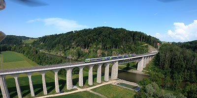

Mit dem Auto
Anfahrt
Von der A1 aus, müssen Sie in Brünnen Westside raus. Danach müssen Sie von Murten aus nach rechts abbiegen.
Von Zentrum müssen Sie nach links abbiegen. Danach müssen Sie bei der nächste Kreisel weiter gerade aus nach Niederbottigen.
Bei der nächste Abzweigung biegen Sie nach rechts und fahren sie alles geradeaus. Fahren sie in Oberbottigen weiter geradeaus bis nach Riedbach Bahnhof.
Mit dem ÖV
ÖV-Verbindung
Von Bern aus, müssen Sie den Zug S52 nehmen.
Fahren Sie bis zur Haltestelle Riedbach.
Alternative:
Am Bahnhof, nehmen Sie das Tram 7 bis Bachmätteli und anschliessend mit dem Bus 32 nach Riedbach Bahnhof